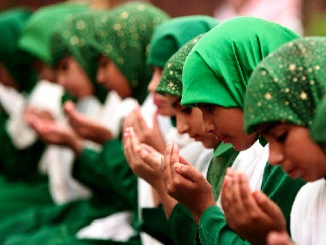
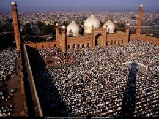

Religion of Pakistan
Welcome to our guide to Pakistan. This is useful for anyone researching Pakistani culture, customs, manners, etiquette, values and wanting to understand the people better. You may be going to Pakistan on business, for a visit or even hosting Pakistani colleagues or clients in your own country. Remember this is only a very basic level introduction and is not meant to stereotype all Pakistanis you may meet!

Facts and Statistics
Location: Southern Asia, bordering Afghanistan 2,430 km, China 523 km, India 2,912 km, Iran 909 km
Capital: Islamabad
Population: 159,196,336 (July 2004 est.)
Ethnic Make-up: Punjabi, Sindhi, Pashtun (Pathan), Baloch, Muhajir (immigrants from India at the time of partition and their descendants)
Religions:Muslim 97% (Sunni 77%, Shi'a 20%), Christian, Hindu, and other (inc. Sikh) 3%
Language in Pakistan
Urdu is the only official language of Pakistan. Although English is generally used instead of Urdu in this regard. English is the lingua franca of the Pakistani elite and most of the government ministries.
Urdu is closely related to Hindi but is written in an extended Arabic alphabet rather than in Devanagari. Urdu also has more loans from Arabic and Persian than Hindi has.
Many other languages are spoken in Pakistan, including Punjabi, Siraiki, Sindhi, Pashtu, Balochi, Hindko, Brahui, Burushaski, Balti, Khawar, Gujrati and other languages with smaller numbers of speakers
Pakistani Society & Culture
Islam
-
Islam is practised by the majority of Pakistanis and governs their personal, political, economic and legal lives.
- Among certain obligations for Muslims are to pray five times a day - at dawn, noon, afternoon, sunset, and evening.
- Friday is the Muslim holy day. Everything is closed.
- During the holy month of Ramadan all Muslims must fast from dawn to dusk and are only permitted to work six hours per day. Fasting includes no eating, drinking, cigarette smoking, or gum chewing.
The Family
-
Islam is practised by the majority of Pakistanis and governs their personal, political, economic and legal lives.
- Among certain obligations for Muslims are to pray five times a day - at dawn, noon, afternoon, sunset, and evening.
- Friday is the Muslim holy day. Everything is closed.
- During the holy month of Ramadan all Muslims must fast from dawn to dusk and are only permitted to work six hours per day. Fasting includes no eating, drinking, cigarette smoking, or gum chewing.
